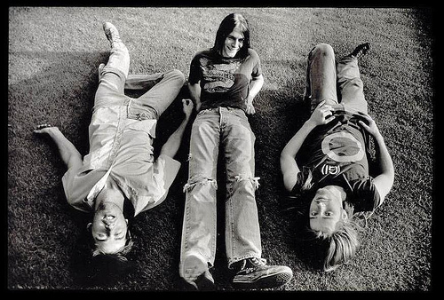
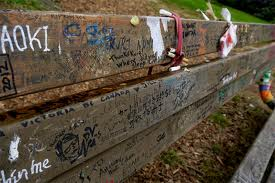

Kurt Donald Cobain was born on February 20, 1967, at Grays Harbor Hospital in Aberdeen, Washington, to a waitress, Wendy Elizabeth (née Fradenburg) (born 1948), and an automotive mechanic, Donald Leland Cobain (born 1946). His parents were married on July 31, 1965 in Coeur d'Alene, Idaho. His ancestry included Irish, English, Scottish, and German. Cobain's Irish ancestors migrated from County Tyrone of Northern Ireland in 1875. Researchers have found them to have been shoemakers, originally named Cobane, who came from the village of Inishatieve near Pomeroy, settling in Cornwall, Ontario, Canada, and then in Washington. Cobain himself believed his family came from County Cork in southern Ireland. Cobain had one younger sister named Kimberly, born on April 24, 1970.
Cobain's family had a musical background. His maternal uncle Chuck Fradenburg starred in a band called The Beachcombers, his Aunt Mari Earle played guitar and performed in bands throughout Grays Harbor County, and his great-uncle Delbert had a career as an Irish tenor, making an appearance in the 1930 film King of Jazz. Cobain was described as being a happy and excitable, while sensitive and caring child. His talent as an artist was evident from an early age. His bedroom was described as having taken on the appearance of an art studio, where he would accurately draw his favorite characters from films and cartoons such as Aquaman, the Creature from the Black Lagoon, and Disney characters like Donald Duck, Mickey Mouse, and Pluto. This enthusiasm was encouraged by his grandmother Iris Cobain, who was a professional artist herself. Cobain began developing an interest in music early in his life. According to his Aunt Mari, he began singing at two years old. At age four, Cobain started playing the piano and singing, writing a song about their trip to a local park. He listened to artists like the Ramones and Electric Light Orchestra and would sing songs like Arlo Guthrie's "Motorcycle Song," The Beatles' "Hey Jude", Terry Jacks' "Seasons in the Sun" and the theme song to The Monkees television show at a young age.
Cobain's parents both found new partners after the divorce. His father had promised not to remarry; however, after meeting Jenny Westeby, he did, to Kurt's dismay. Kurt, his father, Westeby, and her two children Mindy and James, moved into a new household together. Cobain liked Westeby at first, who gave him the maternal attention he desired. In January 1979, Westeby gave birth to a boy, Chad Cobain. This new family, which Cobain insisted was not his real one, was in stark contrast to the attention Cobain was used to receiving as an only boy; he soon began to express resentment toward his stepmother. Kurt's mother began dating a man who was abusive. Cobain witnessed the domestic violence inflicted upon her, with one incident resulting in her being hospitalized with a broken arm. Wendy steadfastly refused to press charges, remaining completely committed to the relationship.
During his second year in high school, Cobain began living with his mother in Aberdeen. Two weeks prior to graduation, he dropped out of Aberdeen High School upon realizing he did not have enough credits to graduate. His mother gave him a choice: find employment or leave. After one week, Cobain found his clothes and other belongings packed away in boxes. Feeling banished from his own mother's home, Cobain stayed with friends, occasionally sneaking back into his mother's basement. Cobain also claimed during periods of homelessness to have lived under a bridge over the Wishkah River, an experience that inspired the Nevermind track "Something in the Way". However, Nirvana bassist Krist Novoselic said, "He hung out there, but you couldn't live on those muddy banks, with the tides coming up and down. That was his own revisionism."
On his 14th birthday on February 20, 1981, Cobain's uncle offered him either a bike or a used guitar. He chose the guitar. Soon, he was mastering Led Zeppelin's power ballad "Stairway to Heaven". Cobain began learning guitar with a few covers, including "Louie Louie", The Cars' "My Best Friend's Girl", and soon began working on his own songs. During high school, Cobain rarely found anyone with whom he could play music. While hanging out at the Melvins' practice space, he met Krist Novoselic, a fellow devotee of punk rock. Novoselic's mother owned a hair salon. Cobain and Novoselic would occasionally practice in the upstairs room of the salon. A few years later, Cobain tried to convince Novoselic to form a band with him by lending him a copy of a home demo recorded by Cobain's earlier band, Fecal Matter. After months of asking, Novoselic finally agreed to join Cobain, forming the beginnings of Nirvana.
Cobain struggled to reconcile the massive success of Nirvana to his underground roots. He also felt persecuted by the media, comparing himself to Frances Farmer. He began to harbor resentments for people who claimed to be fans of the band yet refused to acknowledge, or misinterpreted, the band's social and political views. A vocal opponent of sexism, racism and homophobia, he was publicly proud that Nirvana had played at a gay rights benefit supporting No-on-Nine in Oregon in 1992, in opposition to Ballot Measure Nine, a ballot measure, that if passed, would have prohibited schools in the state from acknowledging or positively accepting LGBT rights and welfare.
The Beatles were an early and lasting influence on Cobain; his aunt Mari remembers him singing "Hey Jude" at the age of two. "My aunts would give me Beatles records," Cobain told Jon Savage in 1993, "so for the most part [I listened to] the Beatles [as a child], and if I was lucky, I'd be able to buy a single."Cobain expressed a particular fondness for John Lennon, whom he called his "idol" in his posthumously-released journals, and he admitted that he wrote the song "About a Girl," from Nirvana 1989 debut album Bleach, after spending three hours listening to Meet The Beatles!.
Punk rock proved to be a profound influence on a teenaged Cobain's attitude and artistic style. His first punk rock album was Sandinista! by The Clash, but he became a bigger fan of a fellow 1970s British punk band the Sex Pistols, describing them as "one million times more important than the Clash" in his journals. He was introduced to 1980s American hardcore bands like Black Flag, Bad Brains, Millions of Dead Cops and Flipper by Buzz Osbourne, lead singer and guitarist of the Melvins and fellow Aberdeen, Washington native. Osborne taught Cobain about Punk by loaning him records and old copies of the Detroit based magazine Creem. The Melvins themselves were an important early musical influence on Cobain, with their heavy, grungy sound mimicked by Nirvana on many songs from Bleach.
Nirvana's Unplugged set also included renditions of "The Man Who Sold the World," by British rock musician David Bowie, and the American folk song, "Where Did You Sleep Last Night," as adapted by the American folk musician, Lead Belly. Cobain introduced the latter by calling Lead Belly his favorite performer, and in a 1993 interview revealed he had been introduced to him from reading the American author, William S. Burroughs. "I remember [Burroughs] saying in an interview, "These new rock'n'roll kids should just throw away their guitars and listen to something with real soul, like Leadbelly,'" Cobain said. "I'd never heard about Leadbelly before so I bought a couple of records, and now he turns out to be my absolute favorite of all time in music. I absolutely love it more than any rock'n'roll I ever heard."
Courtney Love and Cobain met on January 12, 1990, in Portland's Satyricon nightclub, when they both still led ardent underground rock bands. Love made advances, but Cobain was evasive. Early in their interactions, Cobain broke off dates and ignored Love's advances because he was unsure if he wanted a relationship. Cobain noted, "I was determined to be a bachelor for a few months [...] But I knew that I liked Courtney so much right away that it was a really hard struggle to stay away from her for so many months." Courtney Love first saw Cobain perform in 1989 at a show in Portland, Oregon; they talked briefly after the show and Love developed a crush on him.
On August 18, 1992, the couple's daughter Frances Bean Cobain was born. In a 1992 article in Vanity Fair, Love admitted to using heroin, not knowing that she was pregnant. Love claimed that Vanity Fair had misquoted her, but the event created a media controversy for the couple. While Cobain and Love's romance had always been a media attraction, they found themselves hounded by tabloid reporters after the article was published, many wanting to know if Frances was addicted to drugs at birth. The Los Angeles County Department of Children's Services took the Cobains to court, claiming that the couple's drug usage made them unfit parents. Two-week-old Frances was ordered by the judge to be taken from their custody and placed with Courtney's sister Jamie for several weeks, after which the couple obtained custody in an exchange agreement to submit to urine tests and regular visits from a social worker. After months of legal wrangling, the couple were eventually granted full custody of their daughter.
On April 8, 1994, Cobain's body was discovered at his Lake Washington home by an electrician named Gary Smith who had arrived to install a security system. Apart from a minor amount of blood coming out of Cobain's ear, the electrician reported seeing no visible signs of trauma, and initially believed that Cobain was asleep until he saw the shotgun pointing at his chin. A note was found, addressed to Cobain's childhood imaginary friend "Boddah", that stated that Cobain had not "felt the excitement of listening to as well as creating music, along with really writing . . . for too many years now". A high concentration of heroin and traces of diazepam were also found in his body. Cobain's body had been lying there for days; the coroner's report estimated Cobain to have died on April 5, 1994.
A public vigil was held for Cobain on April 10, 1994, at a park at Seattle Center drawing approximately seven thousand mourners. Prerecorded messages by Krist Novoselic and Courtney Love were played at the memorial. Love read portions of Cobain's suicide note to the crowd, crying and chastising Cobain. Near the end of the vigil, Love arrived at the park and distributed some of Cobain's clothing to those who still remained. Dave Grohl would say that the news of Cobain's death was "probably the worst thing that has happened to me in my life. I remember the day after that I woke up and I was heartbroken that he was gone. I just felt like, 'Okay, so I get to wake up today and have another day and he doesn't.'" He also believed that he knew Cobain would die at an early age, saying that "sometimes you just can't save someone from themselves," and "in some ways, you kind of prepare yourself emotionally for that to be a reality." Dave Reed, who for a short time was Cobain's foster father, said that "he had the desperation, not the courage, to be himself. Once you do that, you can't go wrong, because you can't make any mistakes when people love you for being yourself. But for Kurt, it didn't matter that other people loved him; he simply didn't love himself enough."
Cobain has been remembered as one of the most iconic rock musicians in the history of alternative music. In 2003, David Fricke of Rolling Stone ranked him the 12th greatest guitarist of all time. He was later ranked the 73rd greatest guitarist and 45th greatest singer of all time by the same magazine, and by MTV as 7th in the "22 Greatest Voices in Music". In 2006, he was placed at number twenty by Hit Parader on their list of the "100 Greatest Metal Singers of All Time". Reflecting on Cobain's death over ten years later, MSNBC's Eric Olsen wrote, "In the intervening decade, Cobain, a small, frail but handsome man in life, has become an abstract Generation X icon, viewed by many as the 'last real rock star' [. . .] a messiah and martyr whose every utterance has been plundered and parsed".
In 2005, a sign was put up in Aberdeen, Washington, that read "Welcome to Aberdeen – Come As You Are" as a tribute to Cobain. The sign was paid for and created by the Kurt Cobain Memorial Committee, a non-profit organization created in May 2004 to honor Cobain. The Committee planned to create a Kurt Cobain Memorial Park and a youth center in Aberdeen. Because Cobain was cremated and his remains scattered into the Wishkah River in Washington, many Nirvana fans visit Viretta Park, near Cobain's former Lake Washington home, to pay tribute. On the anniversary of his death, fans gather in the park to celebrate his life and memory.
